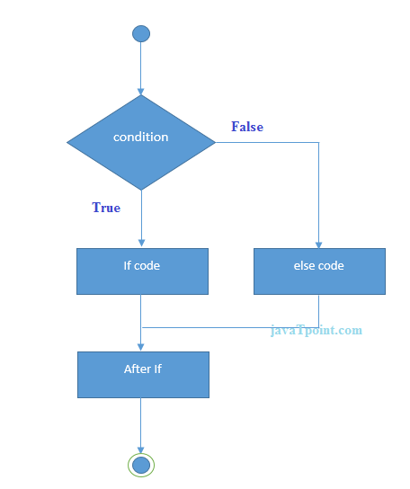

condition statement in javascript
JavaScript If-else
The JavaScript if-else statement is used to execute the code whether condition is true or false.
There are three forms of if statement in JavaScript.
- If Statement
- If else statement
- if else if statement
JavaScript If statement
It evaluates the content only if expression is true. The signature of JavaScript if statement is given below.
//content to be evaluated
}
Flowchart of JavaScript If statement

Let’s see the simple example of if statement in javascript.
<body>
<script>
var a=20;
if(a>10){
document.write("value of a is greater than 10");
}
</script>
</body>
</html>
Output of the above example
JavaScript If...else Statement
It evaluates the content whether condition is true of false. The syntax of JavaScript if-else statement is given below.
//content to be evaluated if condition is true
}
else{
//content to be evaluated if condition is false
}
Flowchart of JavaScript If...else statement
Let’s see the example of if-else statement in JavaScript to find out the even or odd number.
JavaScript If...else if statement
It evaluates the content only if expression is true from several expressions. The signature of JavaScript if else if statement is given below.
//content to be evaluated if expression1 is true
}
else if(expression2){
//content to be evaluated if expression2 is true
}
else if(expression3){
//content to be evaluated if expression3 is true
}
else{
//content to be evaluated if no expression is true
}
Let’s see the simple example of if else if statement in javascript.